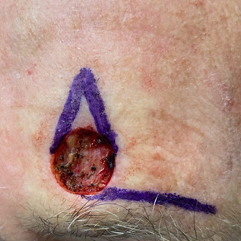
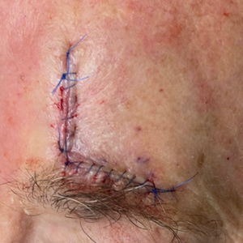
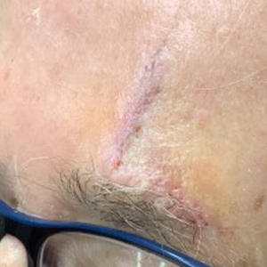

What to expect, shown honestly
Real surgical results, plain-language answers about Mohs surgery, and the handouts you'll want before and after your procedure.
A Mohs case, start to finish
Forehead Mohs surgery: the wound after the skin cancer was fully removed, the same-day flap reconstruction, and the result one week later. The scar continues to fade over the following months.



This gallery contains unedited surgical photos. Patient consent was obtained for the use of de-identified images for educational purposes.
Photos are untouched — no revision, microneedling, or laser was performed. Individual results vary. Additional cases by anatomic site (scalp, nose, cheek, temple, ear) can be added here as they're photographed.
Read before your procedure
Everything you need to prepare for surgery day — how long it takes, what to bring, and how to care for the wound afterward.
Skin tips on social
Dr. Om shares Mohs cases, skincare guidance, and myth-busting on Instagram and TikTok.
Products Dr. Om actually recommends
A short list — the same products he suggests in clinic, available through his storefront.
Common questions, straight answers
Why is it called Mohs surgery?
It's named for Dr. Frederic Mohs, the University of Wisconsin surgeon who developed the technique in the 1930s. It's not an acronym — after decades of refinement it's simply known as "Mohs micrographic surgery."
What makes Mohs different from a regular excision?
Skin cancer is often the "tip of the iceberg," with roots that aren't visible to the naked eye. In Mohs surgery the cancer is removed one thin layer at a time, and 100% of each layer's margin is examined under the microscope before deciding whether more tissue is needed. That's how it achieves the highest cure rate while sparing the most healthy skin.
Will I be awake during the procedure?
Yes — Mohs surgery is an outpatient procedure performed under local anesthesia. The area is fully numbed, and most patients are comfortable throughout.
Why does Mohs surgery take several hours?
Each layer removed must be processed onto slides and read under the microscope while you wait — that careful examination is the whole point. Bring a book; most cases are finished in one visit, with reconstruction done the same day.
Will I have a scar?
Any surgery leaves some scar, but Mohs removes the least possible tissue, and Dr. Om specializes in reconstruction designed to hide within natural skin lines. Scars typically look their worst in the first weeks and fade significantly over months — see the gallery above for an honest example.
Reviews help other patients find care
If Dr. Om treated you well, a short Google review goes a long way.
Leave a review